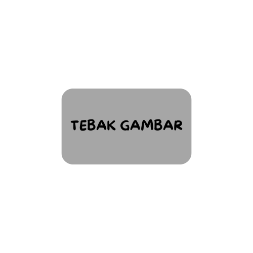
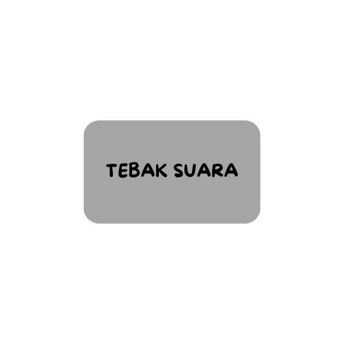

Kuis Hewan untuk Anak-anak
Pilih Mode Bermain

Tebak Gambar
Tebak nama hewan dari gambar yang ditampilkan

Tebak Suara
Tebak nama hewan dari suara yang diputar
Kuis Hewan untuk Anak-anak
Pertanyaan di sini
Skor: 0
Pertanyaan Berikutnya
Mulai Ulang Kuis
♫
Musik